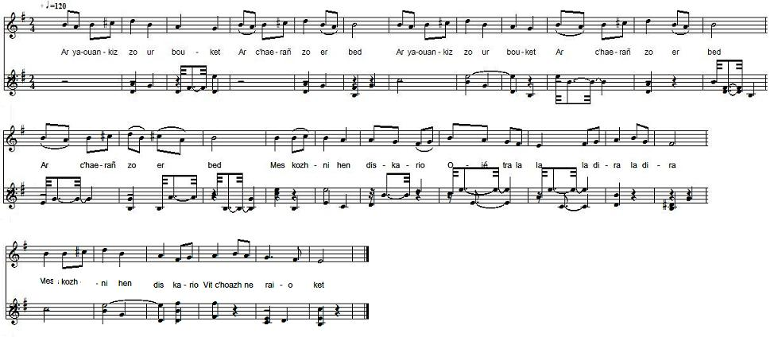

KENAVO D'AR YAOUANKIZ
ADIEU A LA JEUNESSE
FAREWELL TO YOUTH
Chant collecté par Théodore Hersart de La Villemarqué
noté dans le 1er Carnet de Keransquer (p. 253).

Mélodie
Arrangement Christian Souchon (c) 2009
|
A propos de la mélodie: Mode "syntono-lydien" (cf. "Musique", in fine): si-1-dod-1/2-re-1-mi-1-fad-1/2-sol-1-la-1-si La mélodie s'achève sur la médiante, le mi. Extraite de "Trente mélodies populaires de Basse-Bretagne", recueil de Bourgault-Ducoudray paru en 1885 et chanté par Me Guichon à Plounévé. (Source: le site de M. P. Quentel - voir "Liens"). Bibliographie Dans le manuscrit, ce chant porte le titre "ar iaouankis" suivi de l'addition: "Marianne Ollier, femme Delliou qui a déjà chanté "Notre-Dame du Folgoat", publié, et "Erru an hañv hag ar miz Mae", "An droug rans" et la "Fête de Juin". Il s'agit de Marianne Olivier, épouse Delliou (1768 - 1845). "Erru an hañv..." et "Fête de Juin" sont un seul et même chant. Cependant, les 2 tables A et B attribuent "Notre-Dame du Folgoat" , non pas à Marianne Olivier de Kerigasul en Nizon, mais à Katell Rouat, épouse Richard. La 4ème strophe de l'"Adieu à la jeunesse" semble avoir inspiré le 10ème couplet de "An droukrañs" (La rupture): "Amzer omp bet o 'n-em garout n'e-deus ket padet gwall bell; Tremen e-deus graet, plac'h yaouang, evel eur barrad avel!" "Le temps où nous nous sommes aimés N'a pas duré bien longtemps. Jeune fille, il passa, vraiment, Plus vite qu'un coup de vent." Ce chant fut collecté de nombreuses fois et publié: - Souvestre: in "Derniers Bretons", "Chanson du marié", 1836; - Bourgault-Ducoudray : in "30 mélodies populaires...", "Kenavo d'ar yaouankiz", publ. 1885; - Quellien: in "Chansons et danses des Bretons", "An den koz hag an evnik", publ. 1889; - Laterre et Gourvil: in "Kanaouennoù Breiz Vihan", "Soñj ma yaouankiz" (collecté à Carhaix), publ. 1911; - Bourgeois: in "Kanaouennoù pobl", "Adiou d'ar iaouangkis", (collecté à Châteaulin en 1896); - Herrieu: in "Guerzenneu ha Sonenneu Breiz-Izel", "Disul vitin, mitin mat", (collecté à Lanester), publ. 1911. - Luzel: in "Revue de Bretagne et de Vendée", 1867 2ème trimestre, "Kimiad d'ar iaouankis", (collecté à Plouaret), puis dans "Annales de Bretagne II" en 1886; - Milin: in "Gwerin 1" "Eul lunvez goude koan", publ. 1961; - Loth, in "Revue celtique", 1886, "En estèk" (collecté à Ploërdut); in "Annales de Bretagne XIII", 1897, "Disul vitin pe oen savet" (collecté dans l'Île aux Moines). |
About the tunes The tune is in "Syntonolydian" mode (see. "Musique", in fine): si-1-dod-1/2-re-1-mi-1-fad-1/2-sol-1-la-1-si It concludes on the intermediary note, mi. It was published in "Trente mélodies populaires de Basse-Bretagne", a collection composed by Bourgault-Ducoudray, in 1885 who learned it from M. Guichon at Plounévé. (Source: M. P. Quentel's site - see "Links"). Bibliography In the MS, this song is titled "Ar iaouankis" with a remark: "Marianne Ollier, wife of Delliou, who also sung "Notre-Dame du Folgoat", publié, "Erru an hañv hag ar miz Mae", "An droug rans", and "Fête de Juin". This refers to Marianne Olivier, wife of Delliou (1768 - 1845). "Erru an hañv..." and "Fête de Juin" are the same song. Yet both Tables A and B ascribe "Notre-Dame du Folgoat", instead of Marianne Olivier from Kerigasul near Nizon, to Katell Rouat, wife of Richard. Stanza 4 in "Farewell to youth" could have inspired stanza 10 in "An droukrañs" (Breaking off): "Amzer omp bet o 'n-em garout n'e-deus ket padet gwall bell; Tremen e-deus graet, plac'h yaouang, evel eur barrad avel!" " The time when we have been lovers Was not to last for ever: It came and it went, my darling As would do a gust of wind." This song was often collected and published: - Souvestre: in "Derniers Bretons", "Chanson du marié", 1836; - Bourgault-Ducoudray : in "30 mélodies populaires...", "Kenavo d'ar yaouankiz", publ. 1885; - Quellien: in "Chansons et danses des Bretons", "An den koz hag an evnik", publ. 1889; - Laterre and Gourvil: in "Kanaouennoù Breiz Vihan", "Soñj ma yaouankiz" (collected in Carhaix), publ. 1911; - Bourgeois: in "Kanaouennoù pobl", "Adiou d'ar iaouangkis", (collected in Châteaulin, in 1896); - Herrieu: in "Guerzenneu ha Sonenneu Breiz-Izel", "Disul vitin, mitin mat", (collected at Lanester), publ. 1911. - Luzel: in "Revue de Bretagne et de Vendée", 1867 2nd quarter, "Kimiad d'ar iaouankis", (collected at Plouaret), then in "Annales de Bretagne II", in 1886; - Milin: in "Gwerin 1" "Eul lunvez goude koan", publ. 1961; - Loth, in "Revue celtique", 1886, "En estèk" (collected at Ploërdut); in "Annales de Bretagne XIII", 1897, "Disul vitin pe oen savet", (collected at Île aux Moines). |
|
BREZHONEK p. 253 1. Disul vintin pa zavis ha goude oa leinet deiz (bis) Ha goude oa leinet deiz Me moned tre barzh ma liorzh, Oié tra la la la dira la dira Me moned tre barzh ma liorzh, me moned dhi da vale. 2. Me a gleven an eostik war ar bodik kanañ Hag a lak ma c'halonik en em c'hreiz da grenañ. 3. - Larit-c'hwi din, den yaouank: ha c'hwi c'heus poan spered? - Me n'am-eus ket poan kalon, kenebeud poan spered, Nemed glac'har d'am yaouankiz, Oié tra la la la dira la dira Nemed glac'har d'am yaouankiz, d'an amzer dremenet. 4. Ar yaouankiz zo ur bouket, ar c'haerañ zo er bed Mes kozhni hen diskario, vit c'hoazh ne raio ket 5. Ar yaouankiz zo ur bouket, n'eo ket da badout pell Pa soñjer an nebeutañ, a ya gant an avel 6. Gwechall pa oan den yaouank, me oa un paotr disoursi. Arc'hant a oa 'n em jakod vond d'an ostaliri. 7. Bremañ siwazh d'am c'halon, setu me dimezet [Setu me dimezet ] o kemer paladur. Kenavo d'am yaouankiz ha d'am holl plijadur! 8. Ma ven-me laouennanik hag am-be divaskell Me dapfe ma yaouankiz rag n'eo ket aet a-bell. 9. - Eit evez-te da eostik, ha pa de-te divaskell, Ne ves ket evit hi dapañ rak eo aet sur a-bell! |
TRADUCTION FRANCAISE p. 253 1. Dimanche matin me lève et déjeune pour la journée, (bis) et déjeune pour la journée. Dans mon courtil je passe Oié tra la la la dira la dira Dans mon courtil je passe Et me promène dans l'allée. 2. Voilà que sur une branche, j'entends un rossignol chanter Et son chant qui résonne en mon pauvre cœur l'a brisé. 3.- Mais qu'avez-vous donc, jeune homme? Auriez-vous le cœur affligé? - Non, mon cœur n'a point de peine. Non, mon cœur n'est pas affligé: Je pleure ma jeunesse Oié tra la la la dira la dira Je pleure ma jeunesse Et le temps qui s'en est allé. 4. Une rose est la jeunesse. C'est bien la plus belle qui soit. Que vienne la vieillesse et vite elle se fanera. 5. La jeunesse est une rose qui ne dure pas bien longtemps. Quand on pense à la chose! Elle s'envole avec le vent! 6. Quand j'étais célibataire, les soucis m'étaient inconnus Et l'argent dans ma poche, au cabaret vite était bu. 7. A présent quelle détresse! Voila que je suis marié! Une conjointe traîtresse et ma vie a beaucoup changé! Adieu donc, ma jeunesse, mes plaisirs c'était le passé! 8. Que ne puis-je avoir des ailes et me changer en roitelet! Je courrais après elle, elle ne pourrait m'échapper. 9. - Mais la fauvette elle-même, bien qu'elle soit d'ailes pourvue, S'épargne cette peine: elle est loin, c'est peine perdue. Traduction: Ch. Souchon (2012) |
ENGLISH TRANSLATION p. 253 1. Early that Sunday I rose, had my repast for the day (twice) had my repast for the day, And to my yard I went Oié tra la la la dira la dira And to my yard I went Over among its bowers to stray. 2. A nightingale I heard. In the bush she sang an air. Her sweet chant caused my heart to lie full lowly in its lair. 3. - O, young man, young man, tell me, Say, is your mind in pain? Neither my mind, nor my soul! Neither of them is in pain! But woe is me for my youth Oié tra la la la dira la dira But woe is me for my youth And all my time spent in vain. 4. For youth is like a rose, best thing in this lesser world Old age is sure to cause the fair rose soon to wilt. 5. Youth, akin to the rose, you'll never last for long! Once your grace is disclosed, with the wind it is gone along! 6. When a proud bachelor I was, happy, lucky, free of care, The money in my pocket, never would stay for long there. 7. But woe betide me when I made up my mind to wed! My youth would not endure it, soon away from me it fled. Farewell my youth that by pleasure-seeking was always led! 8. If like a wren I had wings, if I had wings like a wren, I would chase after it, soon it would be back to my den. 9. - A nightingale if you were, that's a thing I can teach, Never would you capture it, it's far and out of your reach! Translated by Ch. Souchon (2012) |
|
Le 2ème carnet de Keransquer, publié en novembre 2018, présente pages 10 et 11, une variante ou un pastiche du chant précédent intitulé curieusement "Chanson du marié (jamais chanté[e] par lui)" et sous-titrée "An oarc'hik koz" (Le vieux chef de famille). Dans le modèle, un jeune homme dit adieu à ses jeunes années. Dans la copie, c'est la chanson qu'un vieux chef de famille a omis de chanter au moment de quitter la jeunesse. |
The 2nd Keransquer notebook, published in November 2018, presents on pages 10 and 11, a variant or a pastiche of the previous song, curiously titled "Song of the married man (which he failed to sing)" and subtitled "An oarc'hik koz "(The old head of family). In the original a young man says goodbye to his younger years. The copy is the song that an old householder omitted to sing when leaving youth. |
|
BREZHONEK p. 10 1. Disul vintin pa zaviz, ha pa oa leinet Ha me on aet d’am jardin (+), da ober ur vale. 2. Me a gleve ar goukoug war ur bod o kanañ Hag a c’houlenn diganin (+) - Ha c’hwi eo klañv a galon, Pe c’hwi ‘peus en ho spered poan? 3. - Me n’on ket klañv a gallon. N’am-eus ket poan-spered. 'Met gant kañv d’am yaouankiz (+) he-deus va dilezet. 4. – Mard ‘oc’h dilezet ganti, dilezet evit mat Hag e pefec’h div askell (+), n’oc’h ket evit tapat. 5. Arsa-ta ozharc’hik kozh, c’hwi zo deuet war an oad - Rentit din va yaouankiz (+), ha me baeo boutailhad, P. 11 6. An ozharc’hik kozh a lare, dre ma oa ur paotr fin : - Rentit din-me va-hini (+) ha me a baeo gwin. 7. Yaouankiz zo ur bouked, ar c’haerrañ zo er bed. Mes kozhni p’hen diskarfe (+), netra hen rofe ken. 8. Gwechall pa oan den yaouank, ha me oan paotr disoursi, Arc’hant a oa em chakod (+), ez aen d’an ostaliri. 9. Mes bremañ p’on dimezet, kemeret paladur Kenavo d’am yaouankiz (+) ha d’am holl plijadur ! 10. Gwechall pa oan den yaouank, me a oa paotr mat. Ober ur bal war chadenn (+), ma diaozet ‘m-eus troad. 11. [Mes bremañ ne ran ket mui], emaon dimezet [alas] Hag abaoe aet va mestrez (+), ez on chomet er blas. (+) Oié tra la la la dira la dira |
TRADUCTION FRANCAISE (Jamais chantée par lui) p. 10 1. Dimanche matin me lève et après déjeuner Au jardin me promène (+), au jardin me suis promené. 2. Voilà que sur la branche j'entends le coucou chanter Le coucou me demande: (tra lala lala) - Auriez-vous le cœur affligé? Le coucou me demande: Auriez-vous donc l'esprit peiné? - 3. - Mon coeur n'est point malade, ni mon esprit non plus, Ils pleurent ma jeunesse (+) ce bien qu'à jamais j'ai perdu. 4. - Quand la jeunesse vous quitte, elle vous quitte à jamais. Si vous aviez des ailes (+), vous ne pourriez la rattraper. 5. Faites-vous y, vieil homme, votre âge est avancé! - Rendez-moi ma jeunesse (+), une bouteille je paierai! - p. 11. 6. Ainsi le patriarche, qui se croyait malin Disait: "C'est ma jeunesse (+), contre une bouteille de vin!". 7. - Une fleur est la jeunesse. C'est la plus belle qui soit! Mais quand la flétrit l'âge (+) jamais rien ne vous la rendra. 8. - Quand j'étais célibataire, je n'avais point de soucis. De l'argent plein les poches, au café souvent l'on me vit. 9. Mais depuis mon mariage, mon pelage a beaucoup pâli. Adieu donc ma jeunesse! (+) et les plaisirs d'antan aussi! 10. Jadis quand j'étais jeune, le gaillard que j'étais Dansait le bal en chaine (+) et même avec un pied foulé. 11. Cela cessa dès l'heure que je fus marié Et quand partit ma belle (+), dès lors je n'ai plus bougé. (+) Oye tra la la la dira la dira Traduction: Ch. Souchon (2019) |
ENGLISH TRANSLATION (which he failed to sing when he was young) p. 10 1. Early that Sunday I rose, had my repast for the day And to my yard I went (+) among the bowers there to stray. 2. There in a bush a cuckoo I heared singing its strains Who asked me: "O tell me, (tra lala lala) are you in your heart felling pain?. Or is it in your spirit? To ask I can't refrain. 3. - Neither my heart nor my mind causes me trouble, my friend But for my youth I'm mourning (+) and all the years I did spend. 4. - Once by youth you're deserted, she has fled for ever If you had a pair of wings (+) you could not catch up with her. 5. You must consider, old man, that age is telling on you. - If you give me my youth back (+), a bottle I'll pay, I'll do! p. 11 6. The old husband declared, he found it smart and fine: - Just give me back my own youth (+) I'll pay you a pint of wine. 7. O youth is like a flower, in this world fairest and best. Old age is sure to cause (+) her beauty once to be suppressed. 8. When a proud bachelor I was, happy, lucky, free of care, The money in my pocket, (+) never would stay for long there. 9. But woe betide me when I made up my mind to wed! My youth would not endure it, (+) pleasure away from me fled. 10. In times past when I was young, as nimble as one can be. I took part in chain dances (+) a sprained foot did not prevent me. 11. [Alas soon it was all over]: I got married by God's grace. And since my sweetheart passed (+), well, I never stirred from my place. (+) Oié tra la la la la, la dira, la dira Translated by Ch. Souchon (2019) |
* Chants divers*